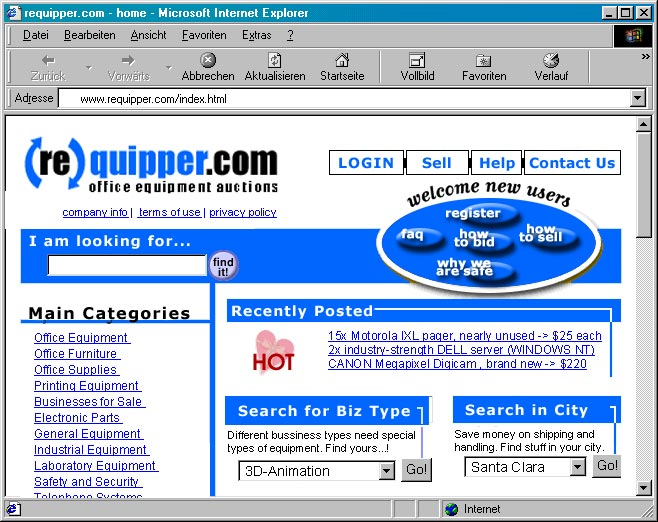
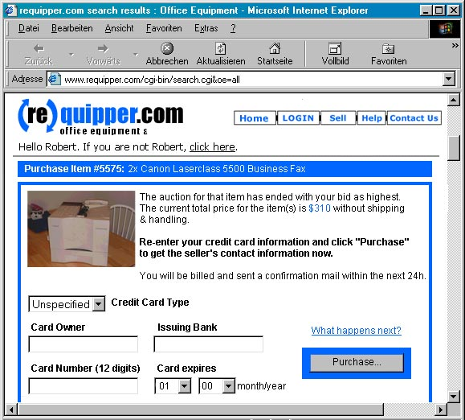
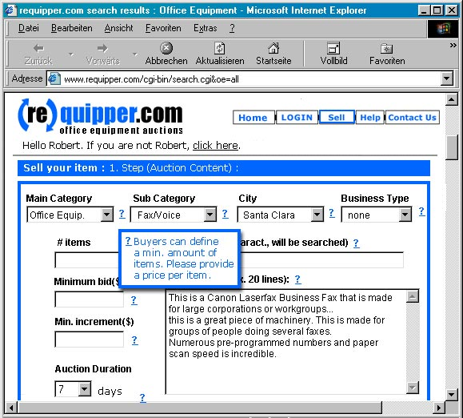
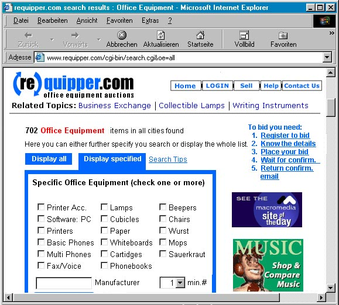
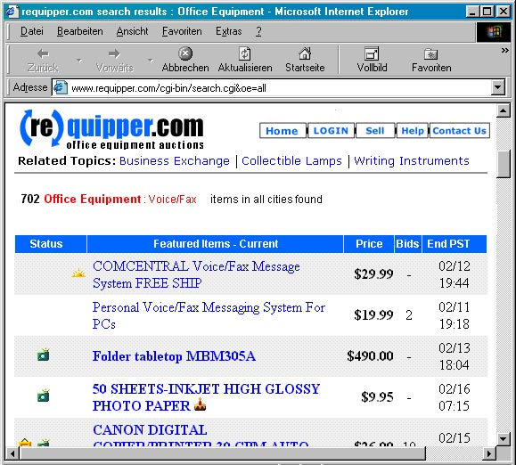
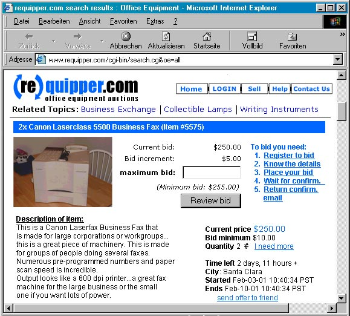

<!DOCTYPE HTML PUBLIC "-//W3C//DTD HTML 3.2//EN">
<HTML>
<HEAD>
	<META HTTP-EQUIV="CONTENT-TYPE" CONTENT="text/html; charset=windows-1252">
	<TITLE>Feasibility Study requipper.com</TITLE>
	<META NAME="GENERATOR" CONTENT="StarOffice 6.0  (Win32)">
	<META NAME="CREATED" CONTENT="20020325;143199">
	<META NAME="CHANGED" CONTENT="20020325;144374">
</HEAD>
<BODY LANG="en-US" TEXT="#000000" LINK="#0000ff" VLINK="#800080">
<DIV TYPE=HEADER>
	<CENTER>
		<TABLE WIDTH=614 BORDER=0 CELLPADDING=5 CELLSPACING=0>
			<COL WIDTH=240>
			<COL WIDTH=354>
			<TR VALIGN=TOP>
				<TD WIDTH=240 HEIGHT=66>
					<DL>
						<DT><P LANG="en-GB"><FONT FACE="MS Reference Sans Serif"><FONT SIZE=2><BR>e-Commerce
						Feasibility Study<BR>Winter quarter 2001</FONT></FONT><DT><P LANG="en-GB">
						<FONT FACE="MS Reference Sans Serif"><FONT SIZE=2>Mktg. 4450</FONT></FONT></DL>
				</TD>
				<TD WIDTH=354>
					<P LANG="en-GB" ALIGN=RIGHT><U></U></TD>
			</TR>
		</TABLE>
	</CENTER>
	<DL>
		<DD><P LANG="en-GB"><BR>
		<DD><P LANG="en-GB"><BR>
	</DL>
</DIV>
<P LANG="en-GB" ALIGN=CENTER><BR><BR>
</P>
<P LANG="en-GB" ALIGN=CENTER><FONT FACE="Tahoma"><FONT SIZE=4><B>Feasibility
Study &ldquo;requipper.com&ldquo;</B></FONT></FONT></P>
<P LANG="en-GB" ALIGN=CENTER><FONT FACE="Tahoma"><FONT SIZE=4>Of
Robert Soesemann &amp; Rolando Navarro<BR>at CSU Hayward Winter
Quarter, 02/28/2001</FONT></FONT></P>
<P LANG="en-GB" ALIGN=CENTER>&ldquo;<FONT FACE="Tahoma"><FONT SIZE=4><B><FONT SIZE=4>e-Commerce
Marketing&rdquo; - Mktg. 4450,</FONT></B><FONT SIZE=4><BR>Instructor:
Camille Levasseur<BR></FONT></FONT></FONT><BR><BR>
</P>
<P LANG="en-GB" ALIGN=CENTER></P>
<P LANG="en-GB"><FONT FACE="Tahoma"><FONT SIZE=4><B>Table of Contents</B></FONT></FONT></P>
<DIV ID="Inhaltsverzeichnis1">
	<DL>
		<DL>
			<DL>
				<DL>
					<DD><P LANG="en-GB"><FONT FACE="Tahoma"><FONT SIZE=3><B>1.Background	2</B></FONT></FONT><DD><P LANG="en-GB">
					<FONT FACE="Tahoma"><FONT SIZE=3><B>2.Description of the
					Website	2</B></FONT></FONT><DD><P LANG="en-GB">
					<FONT FACE="Tahoma"><FONT SIZE=3><B>3.Business Model	3</B></FONT></FONT><DD><P LANG="en-GB">
					<FONT FACE="Tahoma"><FONT SIZE=3><B>4.Idea Selection	3</B></FONT></FONT><DD><P LANG="en-GB">
					<FONT FACE="Tahoma"><FONT SIZE=3><B>5.Domain Name	3</B></FONT></FONT><DD><P LANG="en-GB">
					<FONT FACE="Tahoma"><FONT SIZE=3><B>6.Goal of Website	4</B></FONT></FONT><DD><P LANG="en-GB">
					<FONT FACE="Tahoma"><FONT SIZE=3><B>7.Target Market	4</B></FONT></FONT><DD><P LANG="en-GB">
					<FONT FACE="Tahoma"><FONT SIZE=3><B>8.Industry Analysis	4</B></FONT></FONT><DD><P LANG="en-GB">
					<FONT FACE="Tahoma"><FONT SIZE=3><B>9.Design	4</B></FONT></FONT><DD><P LANG="en-GB">
					<FONT FACE="Tahoma"><FONT SIZE=3><B>10.Usability Study	5</B></FONT></FONT><DD><P LANG="en-GB">
					<FONT FACE="Tahoma"><FONT SIZE=3><B>11.Cash Flow Projection	6</B></FONT></FONT><DD><P LANG="en-GB">
					<FONT FACE="Tahoma"><FONT SIZE=3><B>12.Marketing Plan 	6</B></FONT></FONT><DD><P LANG="en-GB">
					<FONT FACE="Tahoma"><FONT SIZE=3><B>13.DEAL SUMMARY	7</B></FONT></FONT></DL>
			</DL>
		</DL>
	</DL>
</DIV>
<H1 LANG="en-GB" ALIGN=JUSTIFY><FONT FACE="Tahoma"><FONT SIZE=3>1.Background</FONT></FONT></H1>
<DL>
	<DD><P LANG="en-GB"><FONT FACE="Tahoma"><FONT SIZE=2>The following
	paper was written to prove the feasibility of a fictitious
	web-business called <B>requipper.com</B>. This covers definition of
	the target audience, their specific needs and how the service is
	going to fulfil those needs by describing the key features of the
	site.</FONT></FONT><DD><P LANG="en-GB">
	<FONT FACE="Tahoma"><FONT SIZE=2>We will give an insight into the
	industry we work in, explain our business model and our marketing
	strategy. In the appendix of this study we will verify our
	statements by giving exact numbers.</FONT></FONT></DL>
<H1 LANG="en-GB" ALIGN=JUSTIFY>
<FONT FACE="Tahoma"><FONT SIZE=3>2.<FONT SIZE=3>Description</FONT> of
the Website</FONT></FONT></H1>
<DL>
	<DD><P LANG="en-GB"><FONT FACE="Tahoma"><FONT SIZE=2>With our
	website <B>requipper.com</B> we want to create a
	business-to-business market place where companies, that quickly have
	to get rid of their office inventory and new founded <BR>start-ups
	can virtually meet and trade for the best price. </FONT></FONT>
	<DD><P LANG="en-GB"><FONT FACE="Tahoma"><FONT SIZE=2>Similar to
	B-to-C auction sites like e-Bay or yahoo auctions, we support and
	secure the whole process of easily finding, bidding and transacting
	the items and the money transactions.</FONT></FONT><DD><P LANG="en-GB">
	<FONT FACE="Tahoma"><FONT SIZE=2>During the first phase of our
	business we will only target the California Bay Area, including
	areas of high business like Silicon Valley and San Francisco.</FONT></FONT><DD><P LANG="en-GB">
	<BR>
	<DD><P LANG="en-GB"><FONT FACE="Tahoma"><FONT SIZE=2>The website
	should be easily accessible for both groups of customers &ndash; the
	buyers as well as the sellers.  </FONT></FONT>
	<DD><P LANG="en-GB"><BR>
	<DD><P LANG="en-GB"><FONT FACE="Tahoma"><FONT SIZE=2>Easily
	accessible for the buyers means to have different and intuitive ways
	to search for items,</FONT></FONT><DD><P LANG="en-GB">
	<FONT FACE="Tahoma"><FONT SIZE=2>to find things, that nearly every
	business needs (e.g. computer equipment, telecommunication devices,
	stationary) we will provide typical sections. For items that are
	characteristic to this specific industry, for example (special
	hardware and software licenses). </FONT></FONT>
	<DD><P LANG="en-GB"><FONT FACE="Tahoma"><FONT SIZE=2>Once you have
	found the right product category, you can further specify you search
	by looking for a specific manufacturer, a minimum amount of offered
	items, a starting price limit or a close location of the seller.</FONT></FONT><DD><P LANG="en-GB">
	<FONT FACE="Tahoma"><FONT SIZE=2>When you have found the desired
	item with a suitable price you can place your bid using predefined
	increments set by the seller. After placing a bid you will be asked
	for your personal information, that will be stored in our database
	for future purchases.</FONT></FONT><DD><P LANG="en-GB">
	<FONT FACE="Tahoma"><FONT SIZE=2>This also includes data like,
	address, email address and a phone number (for transaction higher
	than $ 12,000).</FONT></FONT><DD><P LANG="en-GB">
	<BR>
	<DD><P LANG="en-GB"><FONT FACE="Tahoma"><FONT SIZE=2>We will use
	this information to quickly inform about successful bids and to
	confirm transactions. To ensure that a person only bids when he is
	really willing to buy the item we will also ask for a credit card
	information. </FONT></FONT>
	<DD><P LANG="en-GB"><FONT FACE="Tahoma"><FONT SIZE=2>Only when this
	is data is checked as correct, the bidder is actually taking part in
	the specific auction.</FONT></FONT><DD><P LANG="en-GB">
	<BR>
	<DD><P LANG="en-GB"><FONT FACE="Tahoma"><FONT SIZE=2>After a period
	of time, which will be set by the seller, the person who placed the
	highest bid will be able to purchase the items.</FONT></FONT><DD><P LANG="en-GB">
	<BR>
	<DD><P LANG="en-GB"><FONT FACE="Tahoma"><FONT SIZE=2>We will send
	out a confirmation to both sides, asked them to contact each other
	to figure out the shipping and handling.</FONT></FONT><DD><P LANG="en-GB">
	<BR>
	<DD><P LANG="en-GB"><FONT FACE="Tahoma"><FONT SIZE=2>As easy as
	buying equipment at <B>reqipper.com</B>, will be the process of
	selling things there.</FONT></FONT><DD><P LANG="en-GB">
	<BR>
	<DD><P LANG="en-GB"><FONT FACE="Tahoma"><FONT SIZE=2>After
	registering as an authorised seller, and agreeing to our terms of
	use, the site will guide the seller to the best category to post
	their items, help them setting the initial price, defining
	increments and the end date of the auction.</FONT></FONT><DD><P LANG="en-GB">
	<FONT FACE="Tahoma"><FONT SIZE=2>The seller will be asked to
	describe the item, its condition and is given the chance to post
	pictures or other information material of the item to his article.</FONT></FONT></DL>
<H1 LANG="en-GB" ALIGN=JUSTIFY>
<FONT FACE="Tahoma"><FONT SIZE=3>3.Business Model</FONT></FONT></H1>
<DL>
	<DD><P LANG="en-GB"><FONT FACE="Tahoma"><FONT SIZE=2>We are going to
	charge a fee from the buyers for every successful purchase
	(automatically added to the seller&rsquo;s initial bid and every
	increment). This fee depends on the total value of the transacted
	items (approx. 5%). As the identity of the other side is hidden
	until both sides agreed to fulfil the transaction, we will only
	reveal the other side&rsquo;s data after charging the bid</FONT></FONT><DD><P LANG="en-GB">
	<BR>
	<DD><P LANG="en-GB"><FONT FACE="Tahoma"><FONT SIZE=2>In addition we
	will provide topic related ad banner space on our site, so that a
	minor source of revenue will be advertising and sponsorship. We plan
	to advertise for banks, VCs, incubators, as well as lawyers who can
	help companies that have to file bankruptcy or other companies
	typically involved with the process of starting and quitting a
	business.</FONT></FONT></DL>
<H1 LANG="en-GB" ALIGN=JUSTIFY>
<FONT FACE="Tahoma"><FONT SIZE=3>4.Idea Selection</FONT></FONT></H1>
<DL>
	<DD><P LANG="en-GB"><FONT FACE="Tahoma"><FONT SIZE=2>During the last
	couple of months a big number of online start-ups went out of
	business due to slow down in the economy. Although one cannot speak
	of an end of the new economy the most VC firms after the big
	e-Commerce hype of the last year ore more selective in choosing
	promising entrepreneurs.</FONT></FONT><DD><P LANG="en-GB">
	<BR>
	<DD><P LANG="en-GB"><FONT FACE="Tahoma"><FONT SIZE=2>While stating a
	new business is something very exciting for the people evolved,
	trying to close up business is something very frustrating and
	draining for the business owner. By providing this service we try to
	ease the process and try to get as much money as possible for the
	company so they can pay their final debts before they close. By
	doing that on a web-based market, where sellers and buyers directly
	come together, we accelerate the process as much as possible which
	even increases the value to our customers.</FONT></FONT><DD><P LANG="en-GB">
	<BR>
	<DD><P LANG="en-GB"><FONT FACE="Tahoma"><FONT SIZE=2>By using secure
	transactions and giving a safety-guarantee, we want to meet the
	typical fears of online customers due to online transaction
	(credibility -&gt; more traffic -&gt; higher revenue).</FONT></FONT><DD><P LANG="en-GB">
	<FONT FACE="Tahoma"><FONT SIZE=2>We think now is the right time, to
	build a platform for those companies to quickly get rid of their
	inventory. As a major competitor are practically non-existent, being
	the first company in this market segment is one of our key success
	factors.</FONT></FONT></DL>
<H1 LANG="en-GB" ALIGN=JUSTIFY>
<FONT FACE="Tahoma"><FONT SIZE=3>5.Domain Name</FONT></FONT></H1>
<DL>
	<DD><P LANG="en-GB"><FONT FACE="Tahoma"><FONT SIZE=2>The domain name
	<B>requipper.com</B> is a combination of the two main
	characteristics of our business. <I><U>Re</U>use/-cycle</I> and
	<I>e<U>quip</U>ment</I>. Not only are we a marketplace for office
	equipment, but also help to reuse or recycle those items. Although
	we initially planned to call our site requip.com or requipment.com,
	we had to change the name because those name where already taken.</FONT></FONT><DD><P LANG="en-GB">
	<BR>
	<DD><P LANG="en-GB"><FONT FACE="Tahoma"><FONT SIZE=2>As shown on the
	printout of register.com website (see appendix), all sub-domain
	names like reqipper.net are also still available, which is important
	to prevent other companies to interfere with our brand.</FONT></FONT></DL>
<H1 LANG="en-GB" ALIGN=JUSTIFY>
<FONT FACE="Tahoma"><FONT SIZE=3>6.Goal of Website</FONT></FONT></H1>
<DL>
	<DD><P LANG="en-GB"><FONT FACE="Tahoma"><FONT SIZE=2>The beginning
	goal of the site will be to start up with at least 150 transactions
	per month, with an average spending of around $400.00 per
	transaction, assuming this happens we get 5% of the proceeds. In
	this case it would be $3000.00 plus any money coming from
	advertising, which at the beginning is almost none existent.  We are
	counting on reaching our target group and having the number of
	transactions increase from month to month.  </FONT></FONT>
</DL>
<H1 LANG="en-GB" ALIGN=JUSTIFY><FONT FACE="Tahoma"><FONT SIZE=3>7.Target
Market</FONT></FONT></H1>
<DL>
	<DD><P LANG="en-GB"><FONT FACE="Tahoma"><FONT SIZE=2>Our major
	target would be companies in the following cities: San Jose, Palo
	Alto, Sunnyvale, Santa Clara and San Francisco.</FONT></FONT><DD><P LANG="en-GB">
	<FONT FACE="Tahoma"><FONT SIZE=2>With two areas with immensely
	growth in the number of IT businesses and New Media start-ups we
	regard the California Bay Area as the perfect location to start our
	service.</FONT></FONT><DD><P LANG="en-GB">
	<FONT FACE="Tahoma"><FONT SIZE=2>As we not only need the group of
	buyers (new founded small businesses) to keep the service alive, but
	also companies that close their business (e.g. after bankruptcy)
	this area is even more suitable. Although the big climax of last
	year&rsquo;s Internet crisis is exceeded, many failed web start-up
	are going out of business after a delay of some months.</FONT></FONT><DD><P LANG="en-GB">
	<FONT FACE="Tahoma"><FONT SIZE=2>After our long and a sometimes
	frustrating research (city&rsquo;s chambers of commerce, SBDCs) we
	came up with an approximate number of 15,000 customers (mixture of
	new founded small business and failed start-ups) for a target group.</FONT></FONT></DL>
<H1 LANG="en-GB" ALIGN=JUSTIFY>
<FONT FACE="Tahoma"><FONT SIZE=3>8.Industry Analysis</FONT></FONT></H1>
<DL>
	<DD><P LANG="en-GB"><FONT FACE="Tahoma"><FONT SIZE=2>Although there
	are some traditional ways for businesses to turn used inventory into
	cash in the form of brick-and-mortar businesses, those are often
	much more expensive, slower, and restricted to a smaller amount of
	customers. Due to this fact we don&rsquo;t regard, all kinds of
	offline business not as competition.</FONT></FONT><DD><P LANG="en-GB">
	<BR>
	<DD><P LANG="en-GB"><FONT FACE="Tahoma"><FONT SIZE=2>An online
	service that targets our niche market and come close to what we want
	to do, is only <B><I>eBay.com and Yahoo auctions</I></B> with their
	business/office equipment category. As this is only a minor
	sub-section of their big B-2-C site, it is poorly promoted to the
	audience of small businesses. As a competitive advantage we regard
	that we:<BR></FONT></FONT><BR>
</DL>
<UL>
	<LI><P LANG="en-GB"><FONT FACE="Tahoma"><FONT SIZE=2>offer
	additionally features, like the search for special business types</FONT></FONT><LI><P LANG="en-GB">
	<FONT FACE="Tahoma"><FONT SIZE=2>don&rsquo;t insist of shipping
	restrictions, because we only provide small area</FONT></FONT><LI><P LANG="en-GB">
	<FONT FACE="Tahoma"><FONT SIZE=2>pinpoint our marketing to a
	narrowly defined niche market</FONT></FONT></UL>
<H1 LANG="en-GB" ALIGN=JUSTIFY><FONT FACE="Tahoma"><FONT SIZE=3>9.Design</FONT></FONT></H1>
<DL>
	<DD><P LANG="en-GB"><FONT FACE="Tahoma"><FONT SIZE=2>The front-end
	design of our site will be implemented as shown on the screenshots
	in the appendix. During our usability study we found out, that it is
	useful to design very minimalist and functional as the main purpose
	is not to entertain but help to quickly perform a task. Therefore
	throughout the site we use mainly only the two colors of our logo,
	the special shade of blue and black (few exceptions for icons, white
	text and banners).</FONT></FONT><DD><P LANG="en-GB">
	<BR>
	<DD><P LANG="en-GB"><FONT FACE="Tahoma"><FONT SIZE=2>To be
	compatible with the most browsers and system settings we program the
	site using straight HTML, standard fonts (Arial, Helvetica) and with
	very basic Java scripts. All the pages should load very quickly and
	display properly on common screen resolution (800x600).</FONT></FONT><DD><P LANG="en-GB">
	<FONT FACE="Tahoma"><FONT SIZE=2>We also don&rsquo;t use any
	browser-specific features or plug-ins.</FONT></FONT><DD><P LANG="en-GB">
	<BR>
	<DD><P LANG="en-GB"><BR>
	<DD><P LANG="en-GB"><FONT FACE="Tahoma"><FONT SIZE=2>As we mainly
	create dynamic pages using server scripting and databases, it&rsquo;s
	hard to provide a scope of the website.  The number of the
	(relative) static pages (e.g. homepage, FAQ, contact, help, privacy
	statement) will be around 25 pages.   The number of dynamic pages
	grows with each posted item. But as those pages don&rsquo;t need to
	be stored on hard drives (dynamically generated) or designed (using
	the same template over and over again) there is no real use in
	counting this number anyway.</FONT></FONT></DL>
<H1 LANG="en-GB" ALIGN=JUSTIFY>
<FONT FACE="Tahoma"><FONT SIZE=3>10.Usability Study</FONT></FONT></H1>
<DL>
	<DD><P LANG="en-GB"><FONT FACE="Tahoma"><FONT SIZE=2>To build the
	interface design and information structure they way our typical
	target customer would expect it to be, we conducted a small
	usability test on our first prototype. This early prototype is a
	series of typical screenshots compiled to a clickable demo-player
	with <B>MS PowerPoint</B>.</FONT></FONT><DD><P LANG="en-GB">
	<BR>
	<DD><P LANG="en-GB"><FONT FACE="Tahoma"><FONT SIZE=2>All 4 subjects
	of our test were male. Their professions were University art
	instructor (35yrs.), student of physical education (24yrs.), Artist
	(32yrs), and customer service representative at local company
	(39yrs). </FONT></FONT>
	<DD><P LANG="en-GB"><FONT FACE="Tahoma"><FONT SIZE=2>Although all of
	them have a degree in higher education, none of them can be
	described as a power Internet user (no early adopters). Therefore we
	regard them as average web users.</FONT></FONT><DD><P LANG="en-GB">
	<BR>
	<DD><P LANG="en-GB"><FONT FACE="Tahoma"><FONT SIZE=2>While
	displaying the homepage, the were asked the following:</FONT></FONT><DD><P LANG="en-GB">
	<BR>
	<DL>
		<DD><P LANG="en-GB">&ldquo;<FONT FACE="Tahoma"><FONT SIZE=2><B>If
		you would visit this site by chance, without knowing what it is
		about, what would you think?&rdquo;</B></FONT></FONT></DL>
	<DD><P LANG="en-GB">
	<BR>
	<DD><P LANG="en-GB"><FONT FACE="Tahoma"><FONT SIZE=2>As the logo
	reveals the fact that it is about office equipment auctions all test
	users immediately understood, that it is something &ldquo;like <B>eBay</B>,
	where you can buy and sell thing using the auction method&rdquo;.
	Also elements that typically appear on site like product categories,
	a login-button, and labels like &ldquo;bid&rdquo;, &ldquo;auction&rdquo;,
	&ldquo;register&rdquo;, &ldquo;buy&rdquo; and &ldquo;sell&rdquo;
	supported this impression. Two users mentioned the consistent use of
	the blue color as a typical sign for a professional,
	business-related site.</FONT></FONT><DD><P LANG="en-GB">
	<BR>
	<DD><P LANG="en-GB"><FONT FACE="Tahoma"><FONT SIZE=2>Next they were
	asked to describe how they expect the next pages to be when they
	were searching the site for a fax/phone combination. As two users
	were already frequent users of e-Bay they easily figured out their
	way to the desired item.</FONT></FONT><DD><P LANG="en-GB">
	<BR>
	<DD><P LANG="en-GB"><FONT FACE="Tahoma"><FONT SIZE=2>Without telling
	them, 3 of the 4 test users mentioned one of the features, searching
	for a specific city or business type was very useful and that it
	would cut the time that they would spend on line.</FONT></FONT><DD><P LANG="en-GB">
	<BR>
	<DD><P LANG="en-GB"><FONT FACE="Tahoma"><FONT SIZE=2>3 of 4 gave
	negative feedback on the fact that we didn&rsquo;t emphasise the
	security of our transaction by using logos (<B>Verisign</B>, <B>TRUST</B>)
	or text information (&ldquo;using secure server&rdquo;).</FONT></FONT><DD><P LANG="en-GB">
	<FONT FACE="Tahoma"><FONT SIZE=2>2 users mentioned that they would
	hardly purchase or even bid for item without knowing their overall
	quality (e.g. unused, new, average). </FONT></FONT>
	<DD><P LANG="en-GB"><BR>
	<DD><P LANG="en-GB"><FONT FACE="Tahoma"><FONT SIZE=2>In our final
	version we included features, information about secure transaction
	and a <BR>5-star quality system known from other sites like
	<B>Amazon.com</B>.</FONT></FONT><DD><P LANG="en-GB">
	<BR>
	<DD><P LANG="en-GB"><BR>
	<DD><P LANG="en-GB"><BR>
	<DD><P LANG="en-GB"><BR>
	<DD><P LANG="en-GB"><BR>
	<DD><P LANG="en-GB"><FONT FACE="Tahoma"><FONT SIZE=2>As one user
	(the artist) even was an owner of a small business, he said, that
	this site would be a very useful place for him to look for equipment
	at a lower price. He asked when the<BR>web-site would be up for him
	to go. When he was told, that it is just a school<BR>project he was
	very surprised.<BR>The only thing that he didn&rsquo;t like was the
	minimal use of color. He recommended to use more than just two
	colors.</FONT></FONT><DD><P LANG="en-GB">
	<BR>
	<DD><P LANG="en-GB"><FONT FACE="Tahoma"><FONT SIZE=2>The overall
	opinion of all four test users was that it was simple to use,
	because the interface is very similar to <B>eBay</B> and a lot of
	people have used <B>eBay</B> before.</FONT></FONT></DL>
<H1 LANG="en-GB" ALIGN=JUSTIFY>
<FONT FACE="Tahoma"><FONT SIZE=3>11.Cash Flow Projection</FONT></FONT></H1>
<DL>
	<DD><P LANG="en-GB"><FONT FACE="Tahoma"><FONT SIZE=2>We are starting
	our business with an initial investment of $8000; this is to cover
	initial expenses. Here is a brake-down on the incoming cash flows.
	As stated before we do charge a 5% fee for our service, so for
	example on March we had 150 successful transactions, at an average
	of $400 per transaction the total amount for the transactions was
	$60,000 and 5% of that come up to 3000. As our customers start using
	the service and get the word out the number of transactions will
	increase from month to month.</FONT></FONT><DD><P LANG="en-GB">
	<BR>
	<DD><P LANG="en-GB"><FONT FACE="Tahoma"><FONT SIZE=2>Our monthly
	expenses vary any where from $11,000 to $2,500 depending on what we
	do each month. Our phone bill for the twelve month period is $2800,
	marketing $21,000, rent $13,200, loan payment $1000, and so on. Out
	total amount of expenses for the year is $48,000.</FONT></FONT><DD><P LANG="en-GB">
	<BR>
	<DD><P LANG="en-GB"><FONT FACE="Tahoma"><FONT SIZE=2>In looking at
	the cash flow statement we see that we start being profitable on the
	seventh month, where our sales cover our expenses for that month.</FONT></FONT><DD><P LANG="en-GB">
	<BR>
	<DD><P LANG="en-GB"><BR>
</DL>
<H1 LANG="en-GB" ALIGN=JUSTIFY><FONT FACE="Tahoma"><FONT SIZE=3>12.Marketing
Plan </FONT></FONT>
</H1>
<DL>
	<DD><P LANG="en-GB"><FONT FACE="Tahoma"><FONT SIZE=2>To define our
	market was very simple. Our market is high tech companies located in
	the following cities: San Jose, Palo Alto, Sunnyvale, Santa Clara,
	and San Francisco. The hard Part was trying to get all the
	information from the different cities and counties was very
	difficult. The number that we came up with was 15,000 customers;
	this would include new business and businesses going out of bunnies.
	For our marketing we have decided to use Direct Mail and Radio ads,
	as they will reach our customers most effectively and relatively
	inexpensive.</FONT></FONT><DD><P LANG="en-GB">
	<BR>
</DL>
<UL>
	<LI><P LANG="en-GB"><FONT FACE="Tahoma"><FONT SIZE=2><B><U>Direct
	mail</U>:</B> We plan to do 15,000 mailings that would come up to
	$9000 in a twelve-month period the research we expect that we will
	have a 4% success rate that would be around 600 contacts.</FONT></FONT><LI><P LANG="en-GB">
	<FONT FACE="Tahoma"><FONT SIZE=2><B><U>Radio</U>: </B>We have called
	several radios in the area and found out that their monthly rate is
	around $3000 for a four-month period. We would mainly broadcast our
	short and memorable ads during the rush hours, when many of our
	customers are on the road.</FONT></FONT></UL>
<DL>
	<DD><P LANG="en-GB"><BR>
	<DD><P LANG="en-GB"><BR>
	<DD><P LANG="en-GB"><BR>
	<DD><P LANG="en-GB"><BR>
	<DD><P LANG="en-GB"><FONT FACE="Tahoma"><FONT SIZE=2>For the first
	year we are spending $18,000 in marketing. We are going to be really
	aggressive in the first five month because we believe that the
	crucial period for positioning our brand. Once we get to our target
	group they will come back to the web-site to purchase more items.</FONT></FONT><DD><P LANG="en-GB">
	<FONT FACE="Tahoma"><FONT SIZE=2>In the long run we also plan to try
	to advertise on banks around the area that lend money to new
	companies and law firms that helps then on their final paperwork to
	close. </FONT></FONT>
	<DL>
		<DL>
			<DD><P LANG="en-GB"><FONT FACE="Tahoma"><FONT SIZE=2>  </FONT></FONT>
		</DL>
	</DL>
	<DD><P LANG="en-GB"><FONT FACE="Tahoma"><FONT SIZE=2><B><U>ONLINE:</U></B>
	 If we don&rsquo;t see immediate response to our offline marketing
	in the third month, we will also place banner ads on sites that our
	typical target customers visit (financial services (nyt.com),
	tech-related sites (CNET.com) or search engines (google.com).</FONT></FONT><DD><P LANG="en-GB">
	<BR>
	<DD><P LANG="en-GB"><BR>
	<DT><P LANG="en-GB"><BR>
	<DD><P LANG="en-GB"><BR>
	<DD><P LANG="en-GB"><BR>
	<DD><P LANG="en-GB"><FONT FACE="Tahoma"><FONT SIZE=2><B>Marketing
	Budget:   </B></FONT></FONT>
	<DD><P LANG="en-GB"><FONT FACE="Tahoma"><FONT SIZE=2><B>  </B></FONT></FONT>
</DL>
<CENTER>
	<TABLE WIDTH=582 BORDER=1 CELLPADDING=2 CELLSPACING=0 RULES=ROWS>
		<COL WIDTH=410>
		<COL WIDTH=2>
		<COL WIDTH=156>
		<TR VALIGN=TOP>
			<TD WIDTH=410 HEIGHT=12>
				<DL>
					<DD><FONT FACE="Arial"><FONT SIZE=2><B>Radio Marketing</B></FONT></FONT></DL>
			</TD>
			<TD WIDTH=2>
				<DL>
					<DD><P ALIGN=RIGHT><BR>
				</DL>
			</TD>
			<TD WIDTH=156>
				<DL>
					<DD><P ALIGN=RIGHT><FONT FACE="Arial"><FONT SIZE=2><B>$12,000</B></FONT></FONT></DL>
			</TD>
		</TR>
		<TR VALIGN=TOP>
			<TD WIDTH=410 HEIGHT=13>
				<DL>
					<DD><FONT FACE="Arial"><FONT SIZE=2><B>Mailings Marketing</B></FONT></FONT></DL>
			</TD>
			<TD WIDTH=2>
				<DL>
					<DD><P ALIGN=RIGHT><BR>
				</DL>
			</TD>
			<TD WIDTH=156>
				<DL>
					<DD><P ALIGN=RIGHT><FONT FACE="Arial"><FONT SIZE=2><B>$9,000</B></FONT></FONT></DL>
			</TD>
		</TR>
	</TABLE>
</CENTER>
<DL>
	<DD><P LANG="en-GB"><BR>
	<DD><P LANG="en-GB"><FONT FACE="Tahoma"><FONT SIZE=2><B> Time Line:</B></FONT></FONT><DD><P LANG="en-GB">
	<FONT FACE="Tahoma"><FONT SIZE=2><B>	                  </B></FONT></FONT>
</DL>
<CENTER>
	<TABLE WIDTH=583 BORDER=1 CELLPADDING=7 CELLSPACING=0>
		<COL WIDTH=51>
		<COL WIDTH=28>
		<COL WIDTH=28>
		<COL WIDTH=28>
		<COL WIDTH=28>
		<COL WIDTH=28>
		<COL WIDTH=34>
		<COL WIDTH=28>
		<COL WIDTH=28>
		<COL WIDTH=34>
		<COL WIDTH=28>
		<COL WIDTH=28>
		<COL WIDTH=28>
		<TR VALIGN=TOP>
			<TD WIDTH=51>
				<P LANG="en-GB"><BR>
			</TD>
			<TD WIDTH=28>
				<P LANG="en-GB"><FONT FACE="Tahoma"><FONT SIZE=2><B>Mar</B></FONT></FONT></TD>
			<TD WIDTH=28>
				<P LANG="en-GB"><FONT FACE="Tahoma"><FONT SIZE=2><B>Apr</B></FONT></FONT></TD>
			<TD WIDTH=28>
				<P LANG="en-GB"><FONT FACE="Tahoma"><FONT SIZE=2><B>May</B></FONT></FONT></TD>
			<TD WIDTH=28>
				<P LANG="en-GB"><FONT FACE="Tahoma"><FONT SIZE=2><B>Jun</B></FONT></FONT></TD>
			<TD WIDTH=28>
				<P LANG="en-GB"><FONT FACE="Tahoma"><FONT SIZE=2><B>Jul</B></FONT></FONT></TD>
			<TD WIDTH=34>
				<P LANG="en-GB"><FONT FACE="Tahoma"><FONT SIZE=2><B>Aug</B></FONT></FONT></TD>
			<TD WIDTH=28>
				<P LANG="en-GB"><FONT FACE="Tahoma"><FONT SIZE=2><B>Sep</B></FONT></FONT></TD>
			<TD WIDTH=28>
				<P LANG="en-GB"><FONT FACE="Tahoma"><FONT SIZE=2><B>Oct</B></FONT></FONT></TD>
			<TD WIDTH=34>
				<P LANG="en-GB"><FONT FACE="Tahoma"><FONT SIZE=2><B>Nov</B></FONT></FONT></TD>
			<TD WIDTH=28>
				<P LANG="en-GB"><FONT FACE="Tahoma"><FONT SIZE=2><B>Dec</B></FONT></FONT></TD>
			<TD WIDTH=28>
				<P LANG="en-GB" ALIGN=CENTER><FONT FACE="Tahoma"><FONT SIZE=2><B>Jan</B></FONT></FONT></TD>
			<TD WIDTH=28>
				<P LANG="en-GB" ALIGN=CENTER><FONT FACE="Tahoma"><FONT SIZE=2><B>Feb</B></FONT></FONT></TD>
		</TR>
		<TR VALIGN=TOP>
			<TD WIDTH=51>
				<P LANG="en-GB"><FONT FACE="Tahoma"><FONT SIZE=2><B>Radio</B></FONT></FONT></TD>
			<TD WIDTH=28>
				<P LANG="en-GB" ALIGN=CENTER><FONT FACE="Tahoma"><FONT SIZE=2><B>X</B></FONT></FONT></TD>
			<TD WIDTH=28>
				<P LANG="en-GB" ALIGN=CENTER><BR>
			</TD>
			<TD WIDTH=28>
				<P LANG="en-GB" ALIGN=CENTER><BR>
			</TD>
			<TD WIDTH=28>
				<P LANG="en-GB" ALIGN=CENTER><FONT FACE="Tahoma"><FONT SIZE=2><B>X</B></FONT></FONT></TD>
			<TD WIDTH=28>
				<P LANG="en-GB" ALIGN=CENTER><BR>
			</TD>
			<TD WIDTH=34>
				<P LANG="en-GB" ALIGN=CENTER><FONT FACE="Tahoma"><FONT SIZE=2><B>X</B></FONT></FONT></TD>
			<TD WIDTH=28>
				<P LANG="en-GB" ALIGN=CENTER><BR>
			</TD>
			<TD WIDTH=28>
				<P LANG="en-GB" ALIGN=CENTER><BR>
			</TD>
			<TD WIDTH=34>
				<P LANG="en-GB" ALIGN=CENTER><BR>
			</TD>
			<TD WIDTH=28>
				<P LANG="en-GB" ALIGN=CENTER><BR>
			</TD>
			<TD WIDTH=28>
				<P LANG="en-GB" ALIGN=CENTER><FONT FACE="Tahoma"><FONT SIZE=2><B>X</B></FONT></FONT></TD>
			<TD WIDTH=28>
				<P LANG="en-GB" ALIGN=CENTER><BR>
			</TD>
		</TR>
		<TR VALIGN=TOP>
			<TD WIDTH=51>
				<P LANG="en-GB"><FONT FACE="Tahoma"><FONT SIZE=2><B>Mailing</B></FONT></FONT></TD>
			<TD WIDTH=28>
				<P LANG="en-GB" ALIGN=CENTER><FONT FACE="Tahoma"><FONT SIZE=2><B>X</B></FONT></FONT></TD>
			<TD WIDTH=28>
				<P LANG="en-GB" ALIGN=CENTER><BR>
			</TD>
			<TD WIDTH=28>
				<P LANG="en-GB" ALIGN=CENTER><BR>
			</TD>
			<TD WIDTH=28>
				<P LANG="en-GB" ALIGN=CENTER><BR>
			</TD>
			<TD WIDTH=28>
				<P LANG="en-GB" ALIGN=CENTER><FONT FACE="Tahoma"><FONT SIZE=2><B>X</B></FONT></FONT></TD>
			<TD WIDTH=34>
				<P LANG="en-GB" ALIGN=CENTER><BR>
			</TD>
			<TD WIDTH=28>
				<P LANG="en-GB" ALIGN=CENTER><BR>
			</TD>
			<TD WIDTH=28>
				<P LANG="en-GB" ALIGN=CENTER><FONT FACE="Tahoma"><FONT SIZE=2><B>X</B></FONT></FONT></TD>
			<TD WIDTH=34>
				<P LANG="en-GB" ALIGN=CENTER><BR>
			</TD>
			<TD WIDTH=28>
				<P LANG="en-GB" ALIGN=CENTER><BR>
			</TD>
			<TD WIDTH=28>
				<P LANG="en-GB" ALIGN=CENTER><BR>
			</TD>
			<TD WIDTH=28>
				<P LANG="en-GB" ALIGN=CENTER><BR>
			</TD>
		</TR>
	</TABLE>
</CENTER>
<DL>
	<DD><P LANG="en-GB"><BR>
	<DD><P LANG="en-GB"><BR>
	<DD><P LANG="en-GB"><BR>
</DL>
<H1 LANG="en-GB" ALIGN=JUSTIFY><FONT FACE="Tahoma"><FONT SIZE=3>13.DEAL
SUMMARY</FONT></FONT></H1>
<DL>
	<DT><P LANG="en-GB"><BR>
	<DD><P LANG="en-GB"><FONT FACE="Tahoma"><FONT SIZE=2>We believe that
	$ 50,000 will be enough for all our start-up expenses Therefore we
	will need to get a business loan for $50,000. This will cover our
	initial operating expenses until we are profitable. The business
	owners with their initial investment of $8000 have paid all initial
	expenses.</FONT></FONT><DD><P LANG="en-GB">
	<BR>
	<DD><P LANG="en-GB"><FONT FACE="Tahoma"><FONT SIZE=2>We strongly
	believe that as more clients use our service they will return for
	the convenience and the lower prices, and it would be matter of time
	before our number of transactions increase monthly and with that our
	profits will increase as well. On our first year in business we have
	showed that being profitable will not be a question, considering it
	takes most start ups at lest a year or so to be profitable, we plan
	to do that on the seventh month.  </FONT></FONT>
	<DD><P LANG="en-GB"><BR>
	<DD><P LANG="en-GB"><FONT FACE="Tahoma"><FONT SIZE=2>Looking at the
	market we have chosen and the geographical area we believe that we
	should have no problem as far as making more profits the following
	year. And with that we hope to expand to other fields like medical
	and industrial sectors.</FONT></FONT><DD><H1 LANG="en-GB" ALIGN=JUSTIFY>
	<FONT FACE="Tahoma"><FONT SIZE=3>14.Screenshots</FONT></FONT></H1>
	<DD><P LANG="en-GB"><BR>
	<BR CLEAR=LEFT>
	<DD><P LANG="en-GB"><BR>
	<DD><P LANG="en-GB"><BR>
	<BR CLEAR=LEFT>
	<BR CLEAR=LEFT>
	<DD><P LANG="en-GB"><BR>
	<BR CLEAR=LEFT>
	<DD><P LANG="en-GB"><BR>
	<BR CLEAR=LEFT>
	<DD><P LANG="en-GB"><BR>
	<DD><P LANG="en-GB"><BR>
	<DD><P LANG="en-GB"><BR>
	<BR CLEAR=LEFT>
	<DD><P LANG="en-GB"><BR>
</DL>
<DIV TYPE=FOOTER>
	<P LANG="en-GB" ALIGN=CENTER><SDFIELD TYPE=PAGE SUBTYPE=RANDOM FORMAT=PAGE>11</SDFIELD><DL>
		<DD><P LANG="en-GB">
		<BR>
		<DD><P LANG="en-GB"><BR>
		<DD><P LANG="en-GB"><BR>
		<DD><P LANG="en-GB"><BR>
	</DL>
</DIV>
</BODY>
</HTML>